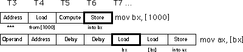

|
Table of Content | Chapter Three (Part 6) |
|
Table of Content | Chapter Three (Part 6) |
| CHAPTER
THREE: SYSTEM ORGANIZATION (Part 5) |
|
| 3.3.12 -
The 8486 Processor 3.3.12.1 - The 8486 Pipeline 3.3.12.2 - Stalls in a Pipeline |
3.3.12.3
- Cache, the Prefetch Queue, and the 8486 3.3.12.4 - Hazards on the 8486 3.3.13 - The 8686 Processor |
| 3.3.12 The 8486 Processor | |
Executing instructions in parallel using a bus interface unit and an execution unit is a special case of pipelining. The 8486 incorporates pipelining to improve performance. With just a few exceptions, we'll see that pipelining allows us to execute one instruction per clock cycle.
The advantage of the prefetch queue was that it let the CPU overlap instruction fetching and decoding with instruction execution. That is, while one instruction is executing, the BIU is fetching and decoding the next instruction. Assuming you're willing to add hardware, you can execute almost all operations in parallel. That is the idea behind pipelining.
Consider the steps necessary to do a generic operation:
[xxxx+bx]),
if applicable. Assuming you're willing to pay for some extra silicon, you can build a little "mini-processor" to handle each of the above steps. The organization would look something likethis:
If you design a separate piece of hardware for each stage in the pipeline above, almost all these steps can take place in parallel. Of course, you cannot fetch and decode the opcode for any one instruction at the same time, but you can fetch one opcode while decoding the previous instruction. If you have an n-stage pipeline, you will usually have n instructions executing concurrently. The 8486 processor has a six stage pipeline, so it overlaps the execution of six separate instructions.
The figure below, Instruction Execution in a Pipeline, demonstrates pipelining. T1, T2, T3, etc., represent consecutive "ticks" of the system clock. At T=T1 the CPU fetches the opcode byte for the first instruction.
At T=T2, the CPU begins decoding the opcode for the first instruction. In parallel, it fetches 16-bits from the prefetch queue in the event the instruction has an operand. Since the first instruction no longer needs the opcode fetching circuitry, the CPU instructs it to fetch the opcode of the second instruction in parallel with the decoding of the first instruction. Note there is a minor conflict here. The CPU is attempting to fetch the next byte from the prefetch queue for use as an operand, at the same time it is fetching 16 bits from the prefetch queue for use as an opcode. How can it do both at once? You'll see the solution in a few moments.
At T=T3 the CPU computes an operand address for the first
instruction, if any. The CPU does nothing on the first instruction if it does not use the
[xxxx+bx] addressing mode. During T3, the CPU also decodes the opcode of the second
instruction and fetches any necessary operand. Finally the CPU also fetches the opcode for
the third instruction. With each advancing tick of the clock, another step in the
execution of each instruction in the pipeline completes, and the CPU fetches yet another
instruction from memory.
At T=T6 the CPU completes the execution of the first instruction, computes the result for the second, etc., and, finally, fetches the opcode for the sixth instruction in the pipeline. The important thing to see is that after T=T5 the CPU completes an instruction on every clock cycle. Once the CPU fills the pipeline, it completes one instruction on each cycle. Note that this is true even if there are complex addressing modes to be computed, memory operands to fetch, or other operations which use cycles on a non-pipelined processor. All you need to do is add more stages to the pipeline, and you can still effectively process each instruction in one clock cycle.
Unfortunately, the scenario presented in the previous section is a little too simplistic. There are two drawbacks to that simple pipeline: bus contention among instructions and non-sequential program execution. Both problems may increase the average execution time of the instructions in the pipeline.
Bus contention occurs whenever an instruction needs to
access some item in memory. For example, if a mov mem, reg instruction needs
to store data in memory and a mov reg, mem instruction is reading data from
memory, contention for the address and data bus may develop since the CPU will be trying
to simultaneously fetch data and write data in memory.
One simplistic way to handle bus contention is through a pipeline stall. The CPU, when faced with contention for the bus, gives priority to the instruction furthest along in the pipeline. The CPU suspends fetching opcodes until the current instruction fetches (or stores) its operand. This causes the new instruction in the pipeline to take two cycles to execute rather than one:
This example is but one case of bus contention. There are many others. For example, as noted earlier, fetching instruction operands requires access to the prefetch queue at the same time the CPU needs to fetch an opcode. Furthermore, on processors a little more advanced than the 8486 (e.g., the 80486) there are other sources of bus contention popping up as well. Given the simple scheme above, it's unlikely that most instructions would execute at one clock per instruction (CPI).
Fortunately, the intelligent use of a cache system can eliminate many pipeline stalls like the ones discussed above. The next section on caching will describe how this is done. However, it is not always possible, even with a cache, to avoid stalling the pipeline. What you cannot fix in hardware, you can take care of with software. If you avoid using memory, you can reduce bus contention and your programs will execute faster. Likewise, using shorter instructions also reduces bus contention and the possibility of a pipeline stall.
What happens when an instruction modifies the ip
register? By the time the instruction
jmp 1000
completes execution, we've already started five other instructions and we're only one clock cycle away from the completion of the first of these. Obviously, the CPU must not execute those instructions or it will compute improper results.
The only reasonable solution is to flush the entire pipeline and begin fetching opcodes anew. However, doing so causes a severe execution time penalty. It will take six clock cycles (the length of the 8486 pipeline) before the next instruction completes execution. Clearly, you should avoid the use of instructions which interrupt the sequential execution of a program. This also shows another problem - pipeline length. The longer the pipeline is, the more you can accomplish per cycle in the system. However, lengthening a pipeline may slow a program if it jumps around quite a bit. Unfortunately, you cannot control the number of stages in the pipeline. You can, however, control the number of transfer instructions which appear in your programs. Obviously you should keep these to a minimum in a pipelined system.
3.3.12.3 Cache, the Prefetch Queue, and the 8486
System designers can resolve many problems with bus contention through the intelligent use of the prefetch queue and the cache memory subsystem. They can design the prefetch queue to buffer up data from the instruction stream, and they can design the cache with separate data and code areas. Both techniques can improve system performance by eliminating some conflicts for the bus.
The prefetch queue simply acts as a buffer between the instruction stream in memory and the opcode fetching circuitry. Unfortunately, the prefetch queue on the 8486 does not enjoy the advantage it had on the 8286. The prefetch queue works well for the 8286 because the CPU isn't constantly accessing memory. When the CPU isn't accessing memory, the BIU can fetch additional instruction opcodes for the prefetch queue. Alas, the 8486 CPU is constantly accessing memory since it fetches an opcode byte on every clock cycle. Therefore, the prefetch queue cannot take advantage of any "dead" bus cycles to fetch additional opcode bytes - there aren't any "dead" bus cycles. However, the prefetch queue is still valuable on the 8486 for a very simple reason: the BIU fetches two bytes on each memory access, yet some instructions are only one byte long. Without the prefetch queue, the system would have to explicitly fetch each opcode, even if the BIU had already "accidentally" fetched the opcode along with the previous instruction. With the prefetch queue, however, the system will not refetch any opcodes. It fetches them once and saves them for use by the opcode fetch unit.
For example, if you execute two one-byte instructions in a row, the BIU can fetch both opcodes in one memory cycle, freeing up the bus for other operations. The CPU can use these available bus cycles to fetch additional opcodes or to deal with other memory accesses.
Of course, not all instructions are one byte long. The 8486 has two instruction sizes: one byte and three bytes. If you execute several three-byte load instructions in a row, you're going to run slower, e.g.,
mov ax, 1000
mov bx, 2000
mov cx, 3000
add ax, 5000
Each of these instructions reads an opcode byte and a 16 bit operand (the constant). Therefore, it takes an average of 1.5 clock cycles to read each instruction above. As a result, the instructions will require six clock cycles to execute rather than four.
Once again we return to that same rule: the fastest programs are the ones which use the shortest instructions. If you can use shorter instructions to accomplish some task, do so. The following instruction sequence provides a good example:
mov ax, 1000
mov bx, 1000
mov cx, 1000
add ax, 1000
We can reduce the size of this program and increase its execution speed by changing it to:
mov ax, 1000
mov bx, ax
mov cx, ax
add ax, ax
This code is only five bytes long compared to 12 bytes for the previous example. The previous code will take a minimum of five clock cycles to execute, more if there are other bus contention problems. The latter example takes only four. Furthermore, the second example leaves the bus free for three of those four clock periods, so the BIU can load additional opcodes. Remember, shorter often means faster.
While the prefetch queue can free up bus cycles and eliminate bus contention, some problems still exist. Suppose the average instruction length for a sequence of instructions is 2.5 bytes (achieved by having three three-byte instructions and one one-byte instruction together). In such a case the bus will be kept busy fetching opcodes and instruction operands. There will be no free time left to access memory. Assuming some of those instructions access memory the pipeline will stall, slowing execution.
Suppose, for a moment, that the CPU has two separate memory spaces, one for instructions and one for data, each with their own bus. This is called the Harvard Architecture since the first such machine was built at Harvard. On a Harvard machine there would be no contention for the bus. The BIU could continue to fetch opcodes on the instruction bus while accessing memory on the data/memory bus:
In the real world, there are very few true Harvard machines. The extra pins needed on the processor to support two physically separate busses increase the cost of the processor and introduce many other engineering problems. However, microprocessor designers have discovered that they can obtain many benefits of the Harvard architecture with few of the disadvantages by using separate on-chip caches for data and instructions. Advanced CPUs use an internal Harvard architecture and an external Von Neumann architecture.The figure below shows the structure of the 8486 with separate data and instruction caches.
Each path inside the CPU represents an independent bus. Data can flow on all paths concurrently. This means that the prefetch queue can be pulling instruction opcodes from the instruction cache while the execution unit is writing data to the data cache. Now the BIU only fetches opcodes from memory whenever it cannot locate them in the instruction cache. Likewise, the data cache buffers memory. The CPU uses the data/address bus only when reading a value which is not in the cache or when flushing data back to main memory.
By the way, the 8486 handles the instruction operand / opcode fetch contention problem in a sneaky fashion. By adding an extra decoder circuit, it decodes the instruction at the beginning of the prefetch queue and three bytes into the prefetch queue in parallel. Then, if the previous instruction did not have a 16-bit operand, the CPU uses the result from the first decoder; if the previous instruction uses the operand, the CPU uses the result from the second decoder.
Although you cannot control the presence, size, or type of cache on a CPU, as an assembly language programmer you must be aware of how the cache operates to write the best programs. On-chip instruction caches are generally quite small (8,192 bytes on the 80486, for example). Therefore, the shorter your instructions, the more of them will fit in the cache (getting tired of "shorter instructions" yet?). The more instructions you have in the cache, the less often bus contention will occur. Likewise, using registers to hold temporary results places less strain on the data cache so it doesn't need to flush data to memory or retrieve data from memory quite so often. Use the registers wherever possible!
There is another problem with using a pipeline: the data hazard. Let's look at the execution profile for the following instruction sequence:
mov bx, [1000]
mov ax, [bx]
When these two instructions execute, the pipeline will look something like
Note a major problem here. These two instructions fetch the
16 bit value whose address appears at location 1000 in memory. But this sequence of
instructions won't work properly! Unfortunately, the second instruction has already
used the value in bx before the first instruction loads the contents of
memory location 1000 (T4 & T6 in the diagram above).
CISC processors, like the 80x86, handle hazards automatically. However, they will stall the pipeline to synchronize the two instructions. The actual execution on the 8486 would look something like shown below:

By delaying the second instruction two clock cycles, the
8486 guarantees that the load instruction will load ax from the proper
address. Unfortunately, the second load instruction now executes in three clock cycles
rather than one. However, requiring two extra clock cycles is better than producing
incorrect results. Fortunately, you can reduce the impact of hazards on execution speed
within your software.
Note that the data hazard occurs when the source operand of
one instruction was a destination operand of a previous instruction. There is nothing
wrong with loading bx from [1000] and then loading ax from
[bx], unless they occur one right after the other. Suppose the code sequence
had been:
mov cx, 2000
mov bx, [1000]
mov ax, [bx]
We could reduce the effect of the hazard that exists in this code sequence by simply rearranging the instructions. Let's do that and obtain the following:
mov bx, [1000]
mov cx, 2000
mov ax, [bx]
Now the mov ax instruction requires only one
additional clock cycle rather than two. By inserting yet another instruction between the mov
bx and mov ax instructions you can eliminate the effects of the hazard
altogether.
On a pipelined processor, the order of instructions in a program may dramatically affect the performance of that program. Always look for possible hazards in your instruction sequences. Eliminate them wherever possible by rearranging the instructions.
With the pipelined architecture of the 8486 we could achieve, at best, execution times of one CPI (clock per instruction). Is it possible to execute instructions faster than this? At first glance you might think, "Of course not, we can do at most one operation per clock cycle. So there is no way we can execute more than one instruction per clock cycle." Keep in mind however, that a single instruction is not a single operation. In the examples presented earlier each instruction has taken between six and eight operations to complete. By adding seven or eight separate units to the CPU, we could effectively execute these eight operations in one clock cycle, yielding one CPI. If we add more hardware and execute, say, 16 operations at once, can we achieve 0.5 CPI? The answer is a qualified "yes." A CPU including this additional hardware is a superscalar CPU and can execute more than one instruction during a single clock cycle. That's the capability that the 8686 processor adds.
A superscalar CPU has, essentially, several execution units. If it encounters two or more instructions in the instruction stream (i.e., the prefetch queue) which can execute independently, it will do so.
There are a couple of advantages to going superscalar. Suppose you have the following instructions in the instruction stream:
mov ax, 1000
mov bx, 2000
If there are no other problems or hazards in the surrounding code, and all six bytes for these two instructions are currently in the prefetch queue, there is no reason why the CPU cannot fetch and execute both instructions in parallel. All it takes is extra silicon on the CPU chip to implement two execution units.
Besides speeding up independent instructions, a superscalar CPU can also speed up program sequences which have hazards. One limitation of the 8486 CPU is that once a hazard occurs, the offending instruction will completely stall the pipeline. Every instruction which follows will also have to wait for the CPU to synchronize the execution of the instructions. With a superscalar CPU, however, instructions following the hazard may continue execution through the pipeline as long as they don't have hazards of their own. This alleviates (though does not eliminate) some of the need for careful instruction scheduling.
As an assembly language programmer, the way you write software for a superscalar CPU can dramatically affect its performance. First and foremost is that rule you're probably sick of by now: use short instructions. The shorter your instructions are, the more instructions the CPU can fetch in a single operation and, therefore, the more likely the CPU will execute faster than one CPI. Most superscalar CPUs do not completely duplicate the execution unit. There might be multiple ALUs, floating point units, etc. This means that certain instruction sequences can execute very quickly while others won't. You have to study the exact composition of your CPU to decide which instruction sequences produce the best performance.
|
Table of Content | Chapter Three (Part 6) |
Chapter Three: System Organization
(Part 5)
26 SEP 1996